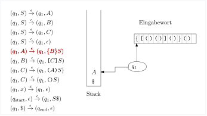
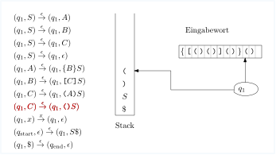

import Section from "~/components/Section";
import Paragraph from "~/components/Paragraph";
import Container from "~/components/Container";
import Carousel from "~/components/Carousel";
import NumberedTitle from "~/components/NumberedTitle";
const Article = () => {
  return (
    <Container>
      <Section
        count={30}
        title_gr="Kontextfreie Grammatiken und Kellerautomaten"
        title_en="cfg to pda"
        number={5.2}
        counter="DefCtr"
        counter="ExoCtr"
        path="/lecture-notes30.tsx">
        <div id="link-to-toc">
          <a href="../vorlesungsskript">
            Inhaltsverzeichnis
          </a>
          <a href="05-01-ableitungen">
            &lt;&lt; Kapitel 5.1
          </a>
        </div>
        <div
          id="link-to-overview"
          style="text-align: end">
          <a href="/">
            zur Kursübersicht
          </a>
          <a href="05-03-exercise-design-grammars">
            Kapitel 5.3 &gt;&gt;
          </a>
        </div>
        <div id="rightSideWrapper">
          <div class="content">
            <div class="chapter">
              <div class="subChapter">
                <h1 class="hidden-title">
                  <span class="subChapterTitle">
                    5.2 
                    Kontextfreie Grammatiken und Kellerautomaten
                  </span>
                </h1>
                <div class="well container theorem">
                  <span class="numbered-title">
                    Theorem
                    <NumberedTitle>
                      &ensp;5.2.1{" "}
                    </NumberedTitle>
                  </span>
                  Zu jeder kontextfreien Grammatik \(G = (\Sigma, N, S, P)\) gibt es
                  einen Kellerautomaten \(M = (\Sigma, Q, \Gamma, \qstart, \delta)\), der
                  die gleiche Sprache akzeptiert, also \(L(G) = L(M)\).
                </div>
                <div class="well container">
                  {" "}{" "}
                  <b>
                    Beweis.
                  </b>
                  Der Beweis ist vergleichsweise einfach, weil wir die Grammatik eins zu eins in
                  Automatentransitionen übersetzen können.
                  Die Idee ist, dass die Symbole auf dem Stack, von unten nach oben gelesen, zu jedem Zeitpunkt
                  eine Wortform bilden, aus der der noch nicht gelesene Teil des Restwortes ableitbar ist.
                  Wenn oben auf dem Stack also ein Terminalsymbol \(x\) liegt und \(x\) auch das nächste
                  Inputzeichen ist, dann poppen wir \(x\) vom Stack und lesen \(x\), d.h. schieben den
                  Lesekopf um ein Zeichen nach rechts; der Stack ist von \(x \alpha\) auf \(\alpha\) geschruft
                  und das Restwort von \(xw\) auf \(w\); wenn also \(x\alpha \Rightarrow^* xw\) galt, so gilt
                  nun immer noch \(\alpha \Rightarrow^* w\).
                  Wenn ein Nichtterminal \(X\) oben auf dem Stack liegt, dieser also die Form
                  \(X \alpha\) hat, und \(w\) das Restwort ist, dann gilt also \(X \alpha \Rightarrow^* w\).
                  Der Automat rät nun nichtdeterministisch die erste in der Ableitung angewandte Produktion
                  \(X \rightarrow \beta\), löscht \(X\) vom Stack und pusht \(\beta\). Der Stack ist
                  nun \(\beta \alpha\), und \(\beta \alpha \Rightarrow^* w\). Entscheidend ist der
                  Nichtdeterminismus:
                  es{" "}
                  <i>
                    gibt
                  </i>
                  {" "}eine korrekte Produktion \(X \rightarrow \beta\), die schlussendlich zu \(w\)
                  führt;
                  der Automat{" "}
                  <i>
                    kann
                  </i>
                  {" "}also diese Transition anwenden.
                  <br />
                  Formaler: Die Zustände des Automaten
                  sind \(Q = \&#123;\qstart, q_1, \qend\&#125;\), das Stackalphabet ist
                  \(\Gamma = \Sigma \cup N \cup \&#123;\$\&#125;\) und die Transitionsregeln sind
                  $$\begin&#123;align*&#125;
                  (q_1, x)&amp;\step&#123;x&#125; (q_1, \epsilon) \quad \textnormal&#123;für jedes $x \in \Sigma$&#125;\\
                  (q_1, A)&amp;\step&#123;\epsilon&#125; (q_1, \beta) \quad \textnormal&#123;für jede Produktion $A \rightarrow
                  \beta$&#125;\\ \hline
                  (\qstart, \epsilon)&amp;\step&#123;\epsilon&#125; (q_1, S \$) \\
                  (q_1, \$)&amp;\step&#123;\epsilon&#125; (\qend, \epsilon)
                  \end&#123;align*&#125;$$
                  Auf einen formalen Beweis, dass \(L(M) = L(G)\) ist, verzichte ich an dieser Stelle.
                  Besser als Sipser in seinem Lehrbuch{" "}
                  <i>
                    Introduction to the Theory of Computing
                  </i>
                  {" "}könnte
                  ich das eh nicht.
                  <span class="qed">
                    \(\square\)
                  </span>
                </div>
                <div class="well subtheorem container theorem">
                  <span class="numbered-title">
                    Beispiel
                    <NumberedTitle>
                      &ensp;5.2.2{" "}
                    </NumberedTitle>
                  </span>
                  Betrachten wir die Grammatik
                  $$\begin&#123;align*&#125;
                  S&amp;\rightarrow A \ | \ B \ | \ C \ | \ \epsilon \\
                  A&amp;\rightarrow \texttt&#123;\&#123;&#125; B \texttt&#123;\&#125;&#125; S \\
                  B&amp;\rightarrow \texttt&#123;[&#125; C \texttt&#123;]&#125; S \\
                  C&amp;\rightarrow \texttt&#123;(&#125; A \texttt&#123;)&#125; S \ | \ \texttt&#123;()&#125;S \\
                  \end&#123;align*&#125;$$
                  Ein Wort in der erzeugten Sprache wäre zum Beispiel
                  <tt>
                    &#123;[()()]()&#125;()
                  </tt>
                  <Paragraph>
                    Schreiben wir nun einen Kellerautomaten, der diese Sprache akzeptiert. Die
                    Idee ist, dass wir Terminalsymbole und Nichtterminalsymbole auf den Stack legen.
                    Ein{" "}
                    <tt>
                      [
                    </tt>
                    &ensp;oben auf dem Stack bedeutet dann{" "}
                    <i>
                      ich will jetzt sofort ein{" "}
                      <tt>
                        [
                      </tt>
                      lesen
                    </i>
                    ;
                    ein Nichtterminal wie \(A\) oben auf dem Stack bedeutet, dass
                    wir als nächstes ein von \(A\) ableitbares Wort, also ein \(A \rightarrow w \in
                    \Sigma^*\) lesen wollen.
                    Um ein \(w\) mit \(A \rightarrow w\) lesen zu können, müssen wir{" "}
                    <i>
                      sofort
                    </i>
                    {" "}ein
                    <tt>
                      &#123;
                    </tt>
                    &ensp;lesen, dann ein Wort \(v\) mit \(B \rightarrow v\), dann ein{" "}
                    <tt>
                      &#125;
                    </tt>
                    &ensp;und
                    so weiter.
                    Wir können das also im Automaten implementieren, indem wir
                    \(A\) vom Stack löschen und durch \(\texttt&#123;\&#123;&#125; B \texttt&#123;\&#125;&#125; S\) auf den Stack legen,
                    mit dem linkesten Symbol zuoberst. Wenn wir für ein Nichtterminal mehrere Regeln
                    haben, also z.B. \(X \rightarrow \alpha\) und \(X \rightarrow \beta\),
                    dann können ein \(X\) auf dem Stack sowohl durch \(\alpha\) als auch durch \(\beta\)
                    ersetzen.
                    Hierfür benötigen wir den Nichtdeterminismus. Beachten Sie, dass wir ein Nichtterminal
                    grundsätzlich immer durch die entsprechende rechte Seite ersetzen können, egal, was das
                    nächste Zeichen ist; es wird im Automaten also ein \(\step&#123;\epsilon&#125;\)-Übergang sein.
                  </Paragraph>
                  Konkret also bauen wir für obige Grammatik die folgenden Automatentransitionen:
                  $$\begin&#123;align*&#125;
                  (q_1, S)&amp;\step&#123;\epsilon&#125; (q_1, A) \\
                  (q_1, S)&amp;\step&#123;\epsilon&#125; (q_1, B) \\
                  (q_1, S)&amp;\step&#123;\epsilon&#125; (q_1, C) \\
                  (q_1, S)&amp;\step&#123;\epsilon&#125; (q_1, \epsilon) \\
                  \hline
                  (q_1,A)&amp;\step&#123;\epsilon&#125; (q_1, \texttt&#123;\&#123;&#125; B \texttt&#123;\&#125;&#125; S) \\
                  \hline
                  (q_1,B)&amp;\step&#123;\epsilon&#125; (q_1, \texttt&#123;[&#125; C \texttt&#123;]&#125; S) \\
                  \hline
                  (q_1,C)&amp;\step&#123;\epsilon&#125; (q_1, \texttt&#123;(&#125; A \texttt&#123;)&#125; S) \\
                  (q_1,C)&amp;\step&#123;\epsilon&#125; (q_1, \texttt&#123;(&#125; \texttt&#123;)&#125; S) \\
                  \hline
                  (q_1,\texttt&#123;\&#123;&#125;)&amp;\step&#123;\texttt&#123;\&#123;&#125;&#125; (q_1, \epsilon) \\
                  (q_1,\texttt&#123;\&#125;&#125;)&amp;\step&#123;\texttt&#123;\&#125;&#125;&#125; (q_1, \epsilon) \\
                  (q_1,\texttt&#123;[&#125;)&amp;\step&#123;\texttt&#123;[&#125;&#125; (q_1, \epsilon) \\
                  (q_1,\texttt&#123;]&#125;)&amp;\step&#123;\texttt&#123;]&#125;&#125; (q_1, \epsilon) \\
                  (q_1,\texttt&#123;(&#125;)&amp;\step&#123;\texttt&#123;(&#125;&#125; (q_1, \epsilon) \\
                  (q_1,\texttt&#123;)&#125;)&amp;\step&#123;\texttt&#123;)&#125;&#125; (q_1, \epsilon) \\
                  \end&#123;align*&#125;$$
                  Dies ist völlig mechanisch und benötigt kein Nachdenken. Wie fangen wir an?
                  Wir legen anfangs ein \(S\) auf den leeren Stack. Wenn dieses \(S\) abgearbeitet
                  ist und das Wort zu Ende ist, akzeptieren wir, und nur dann. Um festzustellen,
                  dass wir wirklich den Stack ganz leer gemacht haben, brauchen wir die
                  Markierung{" "}
                  <tt>
                    $
                  </tt>
                  . Also:
                  $$\begin&#123;align*&#125;
                  (\qstart, \epsilon) \step&#123;\epsilon&#125; (q_1, S \$) \\
                  (q_1, \$) \step&#123;\epsilon&#125; (\qend, \epsilon)
                  \end&#123;align*&#125;$$
                  Unsere Maschine hat also nur drei Zustände: \(\qstart\), \(q_1\) und
                  \(\qend\), welches der akeptierende Endzustand ist. Beachten Sie,
                  dass es von \(\qend\) aus keine ausgehenden Transitionen gibt;
                  sollte es also nach Erreichen von \(\qend\) noch weitere Zeichen
                  im Eingabewort geben, so kann der Automat keine weiteren Schritte durchführen,
                  was einem{" "}
                  <i>
                    reject
                  </i>
                  {" "}entspricht. Erreichen des Zustandes \(\qend\) führt also
                  nur dann zu einem{" "}
                  <i>
                    accept
                  </i>
                  , wenn dies am Ende des Wortes geschieht.
                  <figure class="centered-figure well">
                    <Carousel>
                      
                      
                      
                      
                      
                      
                      
                      
                      
                      
                      
                      
                      
                      
                      
                      
                      
                      
                      
                      
                      
                      
                      
                      
                      
                      
                      
                      
                      
                      
                      
                      
                      
                      
                      
                      
                      
                      
                      
                      
                      
                      
                      
                      
                      
                      
                      
                      
                      
                      
                      
                      
                      
                    </Carousel>
                  </figure>
                </div>
                <Paragraph>
                  Die Gegenrichtung ist schwieriger.
                </Paragraph>
                <div class="well container theorem">
                  <span class="numbered-title">
                    Theorem
                    <NumberedTitle>
                      &ensp;5.2.3{" "}
                    </NumberedTitle>
                    .
                  </span>
                  Zu jedem Kellerautomaten \(M\) gibt es eine kontextfreie Grammatik \(G\)
                  mit \(L(M) = L(G)\).
                </div>
                <Paragraph>
                  Ich folge hier im Wesentlichen dem Beweis aus Sipsers Kapitel 2.
                </Paragraph>
                <div class="well container">
                  {" "}{" "}
                  <b>
                    Beweis.
                  </b>
                  Sei \(M = (\Sigma, Q, \Gamma, \qstart, F, \delta)\) der Kellerautomat.
                  Als erstes führen wir drei Schönheitsoperation durch:
                  <ol>
                    <li>
                      Der Automat hat einen einzigen akzeptierenden Zustand \(\qend\). Dies
                      können wir einfach durch \(\epsilon\)-Übergänge erreichen.
                    </li>
                    <li>
                      Der Automat leert den Stack, bevor er akzeptiert. Dies können wir
                      z.B. dadurch erreichen, dass wir anfangs ein \(\$\) auf den Stack legen
                      und am Ende den Stack poppen, bis wir \(\$\) gepoppt haben.
                    </li>
                    <li>
                      Für jede Transition
                      $$\begin&#123;align*&#125;
                      (p, x) \step&#123;a&#125; (q, y)
                      \end&#123;align*&#125;$$
                      ist genau eines von \(x,y\) leer (und das andere ist genau ein Stacksymbol aus
                      \(\Gamma\)).
                      Eine
                      Transition
                      der Form \((p, \epsilon) \step&#123;a&#125; (q, x) \) nennen wir eine{" "}
                      <i>
                        Push-Operation
                      </i>
                      ,
                      eine der Form
                      \((p, y) \step&#123;a&#125; (q, \epsilon) \) nennen wir eine{" "}
                      <i>
                        Pop-Operation
                      </i>
                      .
                      Der Automat kann in diese Form gebracht werden, indem wir Zwischenzustände einführen:
                      $$\begin&#123;align*&#125;
                      (p, x) \step&#123;a&#125; (q, y) \textnormal &#123; wird ersetzt durch die zwei Transitionen &#125;
                      (p, x) \step&#123;a&#125; (p', \epsilon) \textnormal &#123; und &#125;(p', \epsilon) \step&#123;a&#125; (q, y) \\
                      (p, \epsilon) \step&#123;a&#125; (q,\epsilon) \textnormal &#123; wird ersetzt durch die zwei
                      Transitionen &#125;
                      (p, \epsilon) \step&#123;a&#125; (p', \bigstar) \textnormal &#123; und &#125;(p', \bigstar) \step&#123;a&#125; (q,
                      \epsilon) \ .
                      \end&#123;align*&#125;$$
                      Im zweiten Falle pushen wir also pro Forma ein ansonsten irrelevantes Symbol
                      \(\bigstar\) auf
                      den
                      Stack, um es gleich darauf runterzupoppen.
                    </li>
                  </ol>
                  <Paragraph>
                    Wenn nun der Automat die eben beschriebene Form hat, so ist die
                    Idee, dass wir für
                    jedes Paar \(p,q\) von Zuständen ein Nichtterminalsymbol \(A_&#123;pq&#125;\) einführen, dass
                    genau die Wörter \(w\) ableiten kann, für die
                    $$\begin&#123;align*&#125;
                    (p, \epsilon) \Step&#123;w&#125;^* (q,\epsilon)
                    \end&#123;align*&#125;$$
                    gilt, die also den Automaten von \(p\) nach \(q\) bringen können, wobei der Stack am Anfang
                    und am Ende leer
                    ist. Dies kann auf zwei Weisen geschehen:
                  </Paragraph>
                  <ol>
                    <li>
                      Fall 1: in der Konfigurationsfolge von \((p, \epsilon) \Step&#123;w&#125;^* (q,\epsilon) \)
                      wird der Stack zwischendurch auch mal leer, und zwar nachdem der Präfix \(u\) des Wortes
                      \(w = uv\) gelesen ist, und der Automat ist zu diesem Zeitpunkt im Zustand \(r\). Also:
                      $$\begin&#123;align*&#125;
                      (p, \epsilon) \Step&#123;u&#125;^* (r,\epsilon) \Step&#123;v&#125;^* (q,\epsilon) \ .
                      \end&#123;align*&#125;$$
                      Es sollte also (wenn unsere Konstruktion erfolgreich ist) gelten, dass
                      \(A_&#123;pr&#125; \Rightarrow^* u\) und \(A_&#123;rq&#125; \Rightarrow^* v\). Wir führen daher die
                      Grammatikproduktion
                      $$\begin&#123;align*&#125;
                      A_&#123;pq&#125; \rightarrow A_&#123;pr&#125; A_&#123;rq&#125;
                      \end&#123;align*&#125;$$
                      ein.
                    </li>
                    <li>
                      Fall 2: in der Konfigurationsfolge von \((p, \epsilon) \Step&#123;w&#125;^* (q,\epsilon) \)
                      ist der Stack zwischendurch nie leer. Das heißt wiederum, dass das im ersten
                      Schritt gepushte Stacksymbol \(x\) am Ende gepoppt wird, also \(w = avb\) mit
                      $$\begin&#123;align*&#125;
                      (p, \epsilon) \step&#123;a&#125; (r, x) \Step&#123;v&#125;^* (s,x) \step&#123;b&#125; (q,\epsilon)
                      \end&#123;align*&#125;$$
                      Hier ist wichtig zu wissen, dass die erste Operation eine Push-Operation sein muss:
                      Pop kann sie eh nicht sein, und die Möglichkeit \((p,\epsilon) \step&#123;a&#125; (r, \epsilon)\)
                      haben
                      wir durch unsere Schönheitsoperationen ausgeschlossen. Des weiteren ist zu beachten,
                      dass in der Konfigurationsfolge von \((r, x) \Step&#123;v&#125;^* (s,x)\) der Stack nie
                      leer wird. Keine Transition "liest" also das unterste Zeichen \(x\) -- denn
                      dann müsste nacha Schönheitsoperation das \(x\) ja gepoppt werden und der Stack
                      würde vollständig geleert. In anderen Worten: die Konfigurationsfolge wäre auch dann
                      gültig, wenn Anfangs- und Endstack nicht \([x]\) sondern \(\epsilon\), also der leere
                      Stack wäre:
                      $$\begin&#123;align*&#125;
                      (r, \epsilon) \Step&#123;v&#125;^* (s,\epsilon) \ .
                      \end&#123;align*&#125;$$
                      Wenn unsere Konstruktion Erfolg hat, hieße das also \(A_&#123;rs&#125; \Rightarrow^* v\) und somit
                      ist
                      $$\begin&#123;align*&#125;
                      A_&#123;pq&#125; \rightarrow a A_&#123;rs&#125; b
                      \end&#123;align*&#125;$$
                      eine gültige Regel.
                    </li>
                  </ol>
                  <Paragraph>
                    Schlussendlich führen wir noch die offensichtlich korrekten
                    Regeln \(A_pp \rightarrow \epsilon\) ein, da ja
                    \((p, \epsilon) \Step&#123;\epsilon&#125;^* (p, \epsilon)\) offensichtlich gilt (da ja
                    \(\Step&#123;&#125;^*\) auch die aus null Übergangen bestehende Konfigurationsfolge erlaubt).
                  </Paragraph>
                  Zusammenfassend gesagt besteht unsere Grammatik \(G\) aus drei unterschiedlichen Typen von
                  Regeln:
                  $$\begin&#123;align*&#125;
                  A_&#123;pp&#125;&amp;\rightarrow \epsilon \textnormal&#123; für jeden Zustand \(p \in Q\)&#125; \\
                  A_&#123;pq&#125;&amp;\rightarrow A_&#123;pr&#125;A_&#123;rq&#125; \textnormal&#123; für alle Zustände $p,q,r \in Q$&#125; \\
                  A_&#123;pq&#125;&amp;\rightarrow a A_&#123;rs&#125; b \textnormal&#123; für alle Pushp-Pop-Paare
                  $(p,\epsilon) \step&#123;a&#125; (r,x)$, $(s,x) \step&#123;b&#125; (q,\epsilon)$ von Transitionen&#125;
                  \end&#123;align*&#125;$$
                  <Paragraph>
                    Das Startsymbol der Grammatik ist natürlich \(A_&#123;\qstart, \qend&#125;\).
                  </Paragraph>
                  Auch hier verzichte ich auf einen formalen Beweis, dass \(L(G)=L(M)\) gilt. Der Beweis
                  verwendet (wenig überraschend) Induktion über die Länge der Ableitung bzw. Induktion über die
                  Länge der Konfigurationsfolge und ist in Sipsers Lehrbuch im Detail erklärt.
                  <span class="qed">
                    \(\square\)
                  </span>
                </div>
                <div class="well container theorem">
                  <span class="numbered-title">
                    Beispiel
                    <NumberedTitle>
                      &ensp;5.2.4{" "}
                    </NumberedTitle>
                  </span>
                  Wir betrachten die Sprache
                  $$\begin&#123;align*&#125;
                  a^m b (a|b)^* b a^m
                  \end&#123;align*&#125;$$
                  Diese ist{" "}
                  <i>
                    nicht
                  </i>
                  {" "}regulär, da der Präfix und der Suffix aus \(a\) die gleiche
                  Länge \(m\) haben müssen.
                  Wir bauen zuerst einen Kellerautomaten und übersetzen den dann entsprechend dem Schema
                  aus dem letzten Theorem in eine Grammatik. Dann vergleichen wir die entstandene
                  Grammatik mit der, die wir per Hand aus der obigen Sprachbeschreibung bauen würden.
                  <Paragraph>
                    Unser Automat hat einen Zustand \(q_1\), in welchem er führenden \(a\)'s auf den Stack
                    legt und einen Zustand \(q_3\), in welchem er die \(a\)'s am Ende liest und
                    vom Stack poppt. Zwischen den beiden \(b\)'s in der Mitte ist er in einem
                    Zustand \(q_2\), in welchem er die Eingabesymbole mehr oder weniger ignoriert.
                    Der Automat muss nichtdeterministisch sein, da er "erraten" muss, welches
                    \(b\) das letzte ist, weil er dann mit dem Stack-Poppen beginnen muss.
                  </Paragraph>
                  $$\begin&#123;align*&#125;
                  (\qstart, \epsilon)&amp;\step&#123;\epsilon&#125; (q_1, \$) \\ \hline
                  (q_1, \epsilon)&amp;\step&#123;a&#125; (q_1, a) \\
                  (q_1, \epsilon)&\step&#123;b&#125; (q_2, b) \\
                  \textcolor&#123;red&#125;&#123;(q_2, \epsilon)&#125;&\textcolor&#123;red&#125;&#123; \step&#123;a&#125; (q_2, \epsilon)&#125; \\
                  \textcolor&#123;red&#125;&#123;(q_2, \epsilon)&#125;&\textcolor&#123;red&#125;&#123; \step&#123;b&#125; (q_2, \epsilon)&#125; \\
                  (q_2, b)&amp;\step&#123;b&#125; (q_3, \epsilon) \\
                  (q_3, a)&amp;\step&#123;a&#125; (q_3, \epsilon) \\ \hline
                  (q_3, \$)&amp;\step&#123;\epsilon&#125; (\qend, \epsilon)
                  \end&#123;align*&#125;$$
                  <Paragraph>
                    Die beiden rot gefärbten Transitionen benötigen eine Schönheitsoperation:
                  </Paragraph>
                  <span style="color:purple">
                    $$\begin&#123;align*&#125;
                    (q_2, \epsilon)&amp;\step&#123;a&#125; (q'_2, x) \\
                    (q_2, \epsilon)&amp;\step&#123;b&#125; (q'_2, x) \\
                    (q'_2, x)&amp;\step&#123;\epsilon&#125; (q_2, \epsilon) \\
                    \end&#123;align*&#125;$$
                  </span>
                  <Paragraph>
                    Unsere Zustandsmenge ist also \(Q = \&#123;\qstart, q_1, q_2, q'_2, q_3, \qend\&#125;\).
                    Rein theoretisch müssten wir nun für alle Tripel \(p,r,q\) von Zuständen
                    eine Produktion \(A_&#123;pq&#125; \rightarrow A_&#123;pr&#125; A_&#123;rq&#125;\) einführen, also
                    allein hierfür schon \(5^3 = 125\) Produktionen. Wir können das reduzieren,
                    indem wir die im Beweis beschriebene mechanische Prozedur mit
                    ein wenig selbständigem Denken kombinieren.
                  </Paragraph>
                  <Paragraph>
                    Die erste Beobachtung ist, dass wir gar nicht von jedem Zustand zu jedem
                    kommen können, sondern nur "vorwärts", also wie in diesem Diagramm:
                  </Paragraph>
                  <figure>
                    
                  </figure>
                  <Paragraph>
                    Nichtterminale wie \(A_&#123;31&#125;\) führen wir also gar nicht erst ein. Auch schreiben
                    wir \(A_&#123;13&#125;\) statt \(A_&#123;q_1q_3&#125;\) und verwenden die Indizes 0 für \(\qstart\) und
                    4 für \(\qend\). Als zweite Beobachtung sehen wir, dass man mit leerem
                    Stapel beispielsweise gar nicht von \(\qstart\) nach \(q_3\) kommt:
                    auf dem Weg dorthin wird ein \(\$\) gepusht und nie gepoppt; gleiches
                    gilt für viele weitere Zustandspaare. Das erweiterte Diagramm hier gibt
                    eine Orientierung. Neben jeden Zustand haben wir schematisch den Stack gemalt:
                    <figure>
                      
                    </figure>
                    Die einzigen Nichtterminale sind also die "trivialen" der Form \(A_&#123;qq&#125;\) und darüberhinaus
                    $$\begin&#123;align*&#125;
                    A_&#123;04&#125;, A_&#123;13&#125;
                    \end&#123;align*&#125;$$
                    Da man von \(\qstart\) zu sich selber und von \(\qend\) zu sich selber
                    nur mit dem leeren Wort gelant, ersetzen wir \(A_&#123;00&#125;\) und \(A_&#123;44&#125;\) sofort durch
                    \(\epsilon\).
                    Als Produktionen der Form \(A_&#123;pq&#125; \rightarrow A_&#123;pr&#125; A_&#123;rq&#125;\) erhalten wir also:
                    $$\begin&#123;align*&#125;
                    A_&#123;11&#125;&amp;\rightarrow A_&#123;11&#125; A_&#123;11&#125; \\
                    A_&#123;13&#125;&amp;\rightarrow A_&#123;11&#125; A_&#123;13&#125; \\
                    A_&#123;13&#125;&amp;\rightarrow A_&#123;13&#125; A_&#123;33&#125; \\
                    A_&#123;22&#125;&amp;\rightarrow A_&#123;22&#125; A_&#123;22&#125; \\
                    A_&#123;33&#125;&amp;\rightarrow A_&#123;33&#125; A_&#123;33&#125;
                    \end&#123;align*&#125;$$
                    Schon deutlich besser als die 125 Produktionen, die wir bekämen, wenn wir stur an der
                    Methode im Beweis festhalten würden. Wir brauchen noch Produktionen der
                    Form \(A_&#123;pq&#125; \rightarrow a A_&#123;rs&#125; b\). Dafür müssen wir nach
                    Push-Pop-Paaren \((p,\epsilon) \step&#123;a&#125; (r,x)\), \((s,x) \step&#123;b&#125; (q,\epsilon)\) suchen.
                    Stack-Symbole sind \(a, b, x\). Suchen wir also zuerst nach Paaren von Transitionen,
                    die \(a\) pushen und poppen.
                    $$\begin&#123;align*&#125;
                    (q_1, \epsilon) \step&#123;a&#125; (q_1, a) \textnormal&#123; und &#125;
                    (q_3, a) \step&#123;a&#125; (q_3, \epsilon) \textnormal&#123; ergibt die Produktion &#125;
                    A_&#123;13&#125; \rightarrow a A_&#123;13&#125; a
                    \end&#123;align*&#125;$$
                    Das waren die einzigen Transitionen, in denen \(a\) gepusht und gepoppt wird.
                    Betrachten wir als nächstes das Stacksymbol \(b\):
                    $$\begin&#123;align*&#125;
                    (q_1, \epsilon) \step&#123;b&#125; (q_2, b) \textnormal&#123; und &#125;
                    (q_2, b) \step&#123;a&#125; (q_3, \epsilon) \textnormal&#123; ergibt die Produktion &#125;
                    A_&#123;13&#125; \rightarrow b A_&#123;22&#125; b
                    \end&#123;align*&#125;$$
                    Nun zu den Transitionen mit Stacksymbol \(x\). Da gibt es zwei
                    Push-Transitionen und eine Pop-Transition, also zwei Paare:
                    $$\begin&#123;align*&#125;
                    (q_2, \epsilon) \step&#123;a&#125; (q'_2, x) \textnormal &#123; und &#125;
                    (q'_2, x) \step&#123;\epsilon&#125; (q_2, \epsilon) \textnormal&#123; ergibt die Produktion &#125;
                    A_&#123;22&#125; \rightarrow a A_&#123;2'2'&#125; \\
                    (q_2, \epsilon) \step&#123;b&#125; (q'_2, x) \textnormal &#123; und &#125;
                    (q'_2, x) \step&#123;\epsilon&#125; (q_2, \epsilon) \textnormal&#123; ergibt die Produktion &#125;
                    A_&#123;22&#125; \rightarrow b A_&#123;2'2'&#125; \\
                    \end&#123;align*&#125;$$
                    Und schlussendlich die mit Stacksymbol $. Da gibt es eine Push- und eine
                    Pop-Transition:
                    $$\begin&#123;align*&#125;
                    (\qstart, \epsilon) \step&#123;\epsilon&#125; (q_1, \$) \textnormal &#123;und &#125;
                    (q_3, \$) \step&#123;\epsilon&#125; (\qend, \epsilon) \textnormal&#123; ergibt die Produktion &#125;
                    A_&#123;04&#125; \rightarrow A_&#123;13&#125; \\
                    \end&#123;align*&#125;$$
                    Sammeln wir nun alle Produktionen:
                    $$\begin&#123;align*&#125;
                    \textcolor&#123;red&#125;&#123;A_&#123;11&#125;&#125;&amp;\textcolor&#123;red&#125;&#123;\rightarrow A_&#123;11&#125; A_&#123;11&#125;&#125; \\
                    A_&#123;13&#125;&amp;\rightarrow \textcolor&#123;red&#125;&#123;A_&#123;11&#125;&#125; A_&#123;13&#125; \\
                    A_&#123;13&#125;&amp;\rightarrow A_&#123;13&#125; \textcolor&#123;red&#125;&#123;A_&#123;33&#125;&#125; \\
                    A_&#123;22&#125;&amp;\rightarrow A_&#123;22&#125; A_&#123;22&#125; \\
                    \textcolor&#123;red&#125;&#123;A_&#123;33&#125;&#125;&amp;\textcolor&#123;red&#125;&#123;\rightarrow A_&#123;33&#125; A_&#123;33&#125;&#125; \\ \hline
                    A_&#123;13&#125;&amp;\rightarrow a A_&#123;13&#125; a \\
                    A_&#123;13&#125;&amp;\rightarrow b A_&#123;22&#125; b \\
                    A_&#123;22&#125;&amp;\rightarrow a \textcolor&#123;red&#125;&#123;A_&#123;2'2'&#125;&#125; \\
                    A_&#123;22&#125;&amp;\rightarrow b \textcolor&#123;red&#125;&#123;A_&#123;2'2'&#125;&#125; \\
                    A_&#123;04&#125;&amp;\rightarrow A_&#123;13&#125;\\ \hline
                    \textcolor&#123;red&#125;&#123;A_&#123;00&#125;&#125;&amp;\textcolor&#123;red&#125;&#123;\rightarrow \epsilon&#125; \\
                    \textcolor&#123;red&#125;&#123;A_&#123;11&#125;&#125;&amp;\textcolor&#123;red&#125;&#123;\rightarrow \epsilon&#125; \\
                    A_&#123;22&#125;&amp;\rightarrow \epsilon \\
                    \textcolor&#123;red&#125;&#123;A_&#123;2'2'&#125;&#125;&amp;\textcolor&#123;red&#125;&#123;\rightarrow \epsilon&#125; \\
                    \textcolor&#123;red&#125;&#123;A_&#123;33&#125;&#125;&amp;\textcolor&#123;red&#125;&#123;\rightarrow \epsilon&#125; \\
                    \textcolor&#123;red&#125;&#123;A_&#123;44&#125;&#125;&amp;\textcolor&#123;red&#125;&#123;\rightarrow \epsilon&#125; \\
                    \end&#123;align*&#125;$$
                    wobei \(A_&#123;04&#125;\) das Startsymbol ist.
                    Wir haben diejenigen Nichtterminale und Produktionen rot markiert, aus denen nur
                    \(\epsilon\) hervorgehen kann. Wir können die Grammatik nun entsprechend vereinfachen.
                    Zusätzlich
                    löschen wir \(A_&#123;04&#125;\) und ernennen \(A_&#123;13&#125;\) zu unserem Startsymbol:
                    $$\begin&#123;align*&#125;
                    A_&#123;22&#125;&amp;\rightarrow A_&#123;22&#125; A_&#123;22&#125; \\
                    A_&#123;13&#125;&amp;\rightarrow a A_&#123;13&#125; a \\
                    A_&#123;13&#125;&amp;\rightarrow b A_&#123;22&#125; b \\
                    A_&#123;22&#125;&amp;\rightarrow a \\
                    A_&#123;22&#125;&amp;\rightarrow b \\ \hline
                    A_&#123;22&#125;&amp;\rightarrow \epsilon \\
                    \end&#123;align*&#125;$$
                  </Paragraph>
                  <Paragraph>
                    Überlegen wir nun, ausgehend von dieser Grammatik, was wir aus dem Startsymbol \(A_&#123;13&#125;\)
                    ableiten
                    können. Die einzigen zwei Produktionen mit \(A_&#123;13&#125;\) sind
                    \(A_&#123;13&#125; \rightarrow a A_&#123;13&#125; a\) und \(A_&#123;13&#125; \rightarrow b A_&#123;22&#125;\), also
                    gilt
                    $$\begin&#123;align*&#125;
                    A_&#123;13&#125; \Rightarrow^* a^m b A_&#123;22&#125; b a^m \ .
                    \end&#123;align*&#125;$$
                    Aus \(A_&#123;22&#125;\) können wir per Produktion \(A_&#123;22&#125; \rightarrow A_&#123;22&#125; A_&#123;22&#125;\)
                    erst einmal alle Wortformem der Form \(A_&#123;22&#125;^*\) ableiten; per
                    \(A_&#123;22&#125; \rightarrow a \ | \ b \ | \ \epsilon\) dann alle Wortform \((a|b)^*\).
                    Also:
                    $$\begin&#123;align*&#125;
                    A_&#123;13&#125; \Step&#123;&#125;^* a^m b (a|b)^* b a^m \ .
                    \end&#123;align*&#125;$$
                    Die Grammatik erzeugt also die gewünschte Sprache.
                  </Paragraph>
                </div>
              </div>
            </div>
          </div>
        </div>
      </Section>
    </Container>
  );
};

export default Article;